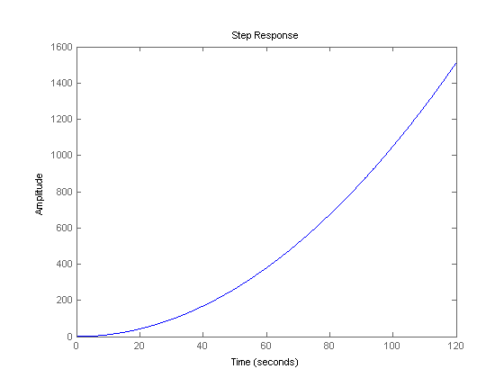
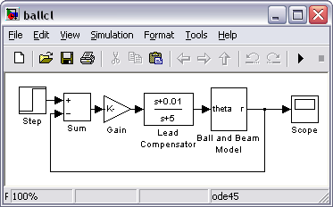
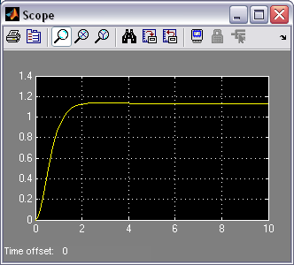

Ball & Beam: Simulink Controller Design
Contents
Simulink model
The Simulink model for the ball and beam system was developed in the Ball & Beam: Simulink Modeling section, and can be downloaded here: ball.mdl.
Open-loop response
Before obtaining a step response, we must set the physical parameters Enter the following commands at the MATLAB prompt.
m = 0.111; R = 0.015; g = -9.8; L = 1.0; d = 0.03; J = 9.99e-6;
We are now ready to run the simulation. Start the simulation by selecting Start from the Simulation menu (or hit Ctrl-T). When the simulation is finished, open the Scope by double clicking on it and hit the Scope's autoscale button. You will see the following response.

From this plot it is clear that the system is unstable in open-loop causing the ball to roll right off the end of the beam. Therefore, some method of controlling the ball's position in this system is required. Later in this tutorial, we will implement a lead compensator.
Extracting the linear model into MATLAB
The Simulink model can be extracted into an equivalent state-space or transfer function model in MATLAB. This is done through the use of In1 and Out1 blocks and the MATLAB function linmod.
The Simulink model can be extracted into an equivalent state-space or transfer function model in MATLAB. This is done through the use of In and Out Connection blocks and the MATLAB function linmod.
At the MATLAB prompt, enter the following commands. You will see the following output providing the open-loop model of the system.
[A,B,C,D] = linmod('ball')
[num,den] = ss2tf(A,B,C,D)
A =
0 1
0 0
B =
0
0.2100
C =
1 0
D =
0
num =
0 0 0.2100
den =
1 0 0
We can verify this model by obtaining an open-loop step response. Enter the following command at the MATLAB prompt. You will see the following open-loop response:
step(num,den);
Building a lead compensator
In the Ball & Beam: Root Locus Controller Design page. a lead compensator was designed with a zero at -0.01 and a pole at -5, with a gain of 37.1. We will now construct this controller in Simulink.
- Bring up your open-loop Ball and Beam model window (or download ours here, ballol.mdl)
- Delete the line which connects the Step block to the Ball and Beam model block.
- Insert a Transfer Function block from the Continuous library to the left of the Ball and Beam block, and connect its output to the input of the Ball and Beam block.
- Edit the Transfer Function block and change its numerator to "[1 0.01]" and its denominator to "[1 5]".
- Change the label of the Transfer Function block to "Lead Compensator".
- Insert a Gain block to the left of the Lead Compensator and connect its output to the Lead compensator's input.
- Change the Gain value to "37.1".
- Insert a Sum block to the left of the Gain block and change it's value to "+-". Connect the output of the Sum to the input of the Gain block.
- Tap a line off the output of the Ball and Beam model and connect it to the negative input of the Sum.
- Connect the Step block to the positive input of the Sum block

You can download our version of the closed-loop model here, ballcl.mdl.
Closed-loop response
Start the simulation in Simulink. Open the scope window and hit the Autoscale button. You should see the following response.
